En esta pagina hablare un poco de mis gustos y pasatiempos
Son mi principal pasatiempo me encanta el hecho de poder experimentar un sin numero de historias y sucesos dede la comodidad del hogar tengo un gusto pricipal por los juegos con una tematica de horror y accion algunos juegos de estos generos son:
|
|
|
Left 4 dead: Es un juego donde tomas el papel de un grupo de supervivientes el cual debe sobrevivir a ordas de zombies para poder escapar de la ciudad
Alan wake: Es un juego donde tomas el papel de un escritor el cual debe enfrentarse a una obra de su autoria que no recuerda haber escrito para poder reencontrarse con su esposa
Silent hill (saga): Es una saga de juegos donde por diversos motivos los protagonistas terminan en el puelo de silent hill el cual causara que se enfrenten a un sin fin de pesadillas para escapar
¿Porque me gustan los juegos de horror?
Lo que me gusta de este tipo de juegos es el enfacis marcado en la historia y como estos preparan la admosfera para dar miedo
aunque el horror no es mi unico genero que es de mi agrado tambien me gustan los juegos de accion, RPG y mundo abierto
Otros generos de juego
Un ejemplo de los juegos de accion seria la saga dead rising la cual se centra en escapar de diversas zonas infestadas de zombies y psicopatas rescatando la mayor cantidad de gente posible
pasando a los RPG un ejemplo de estos seria la saga de persona por lo general los juegos de este genero son de fantasia con una larga duracion con un sistema de combate por turnos me gusta este tipo de juegos por las historias que pueden contar y por untimo estan los
mundo abierto los cuales dan una total libertad al jugador para hacer lo que quiera un ejemplo es la saga GTA que da al jugador competa libertad en las ciudades que ofrece
 |
 |
Ademas de los videojuegos tengo mucho interes en las peliculas de horror me agradan la que cuentan con una trama policial tales como:
El padrino, scarface, Hanival, etc
lo que me gusta principalmente de estos filmes es como manejan la historia para mantenerte anganchado de principio a fin y como se va dando un desarollo de los personajes mientras avanza la trama
| 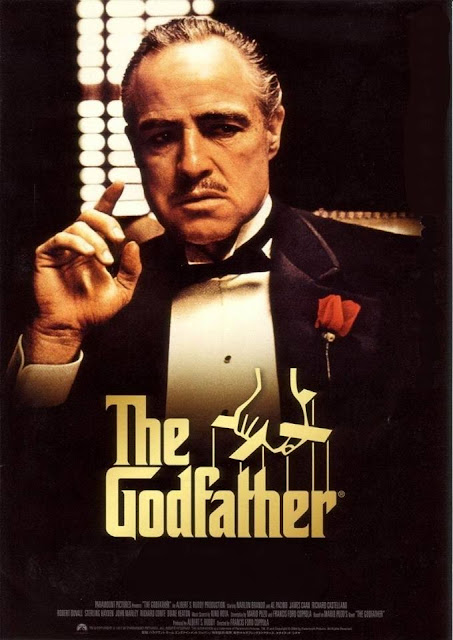 | 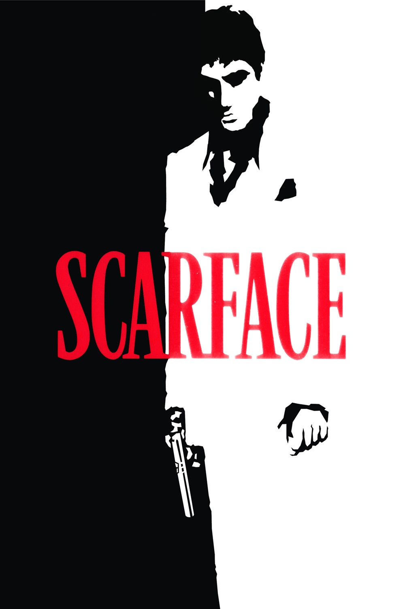 | 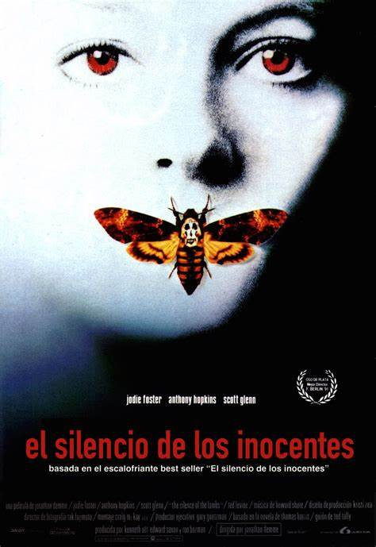 |
tambien me gustan las peliculas de comedia siendo mis favoritas: ¿Qué pasó ayer?, friday y scary movie me encantan las peliculas estilo parodia que tomaban como base varias peliculas y les daban ese toque humoristico
 |
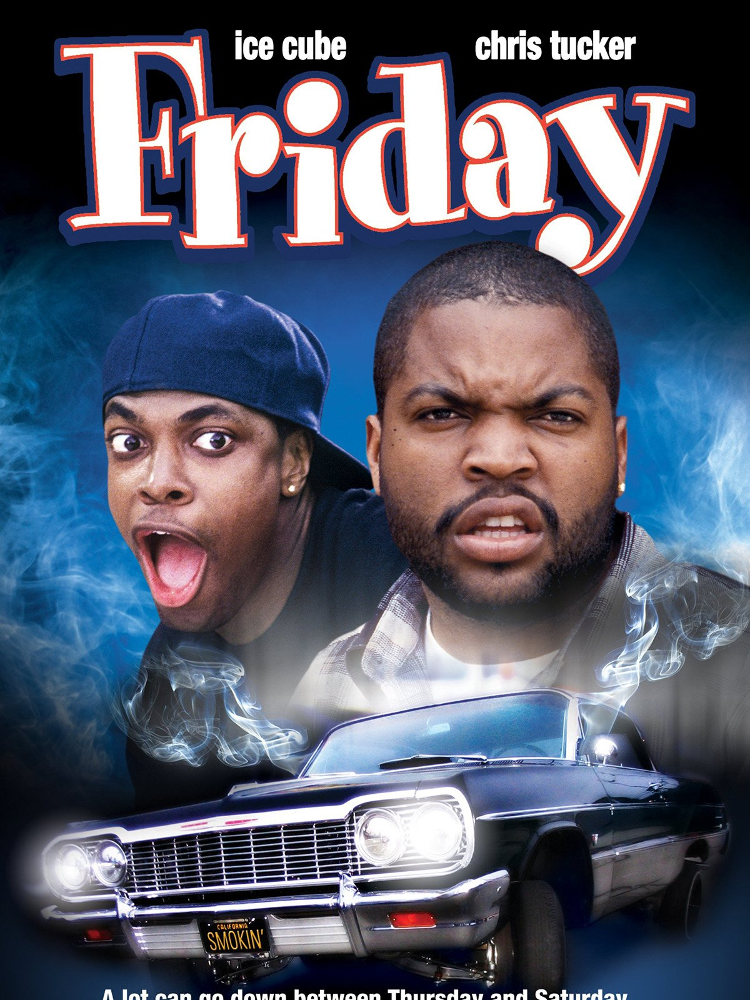 | 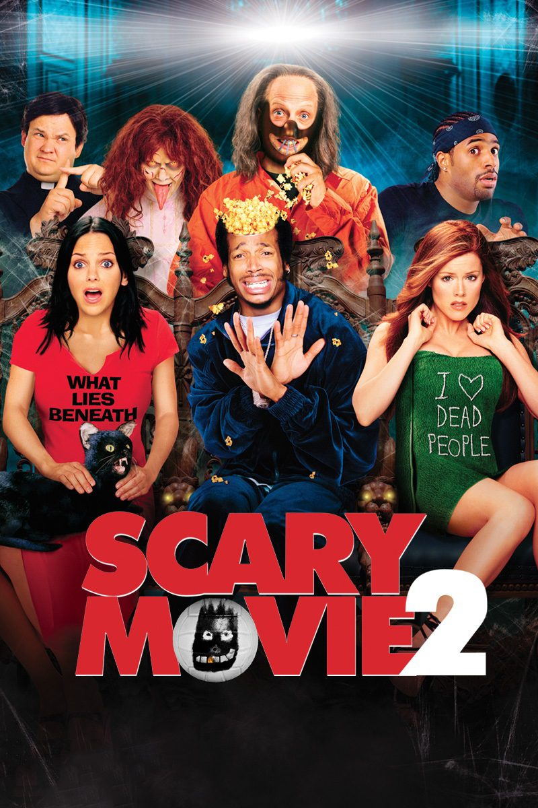 |
Hay una trilogia de peliculas que me encantan esa es la trilogia de piratas del caribe ademas de que me encantan las historias de piratas la historia que cuenta cada pelicula es atrapante por si sola pero si juntas la historia de las 3 tienes un relato muy bueno con la cantidad justa de accion y comedia y todo esto se puede gracias al protagonista Jack Sparrow el cual es un pirata muy extraño y con una creatividad y carisma sin igual ademas de sus excelentes villanos como Hector Barbosa, David Jones o Codler Vequed los cuales en sus respectivas entregas dan un espectaculo imprecionante
| 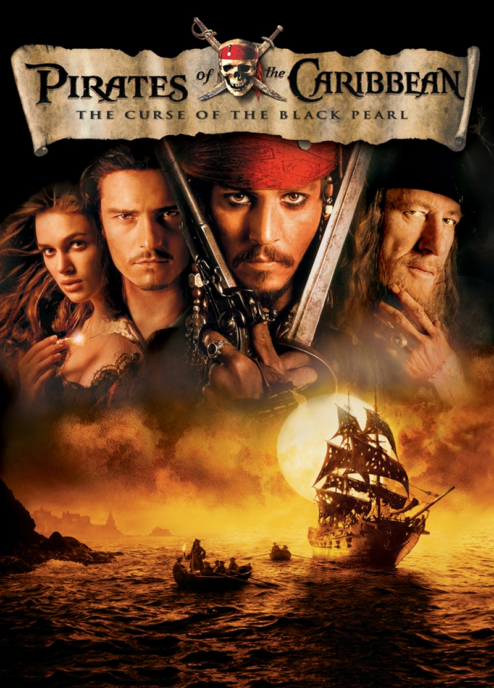 | 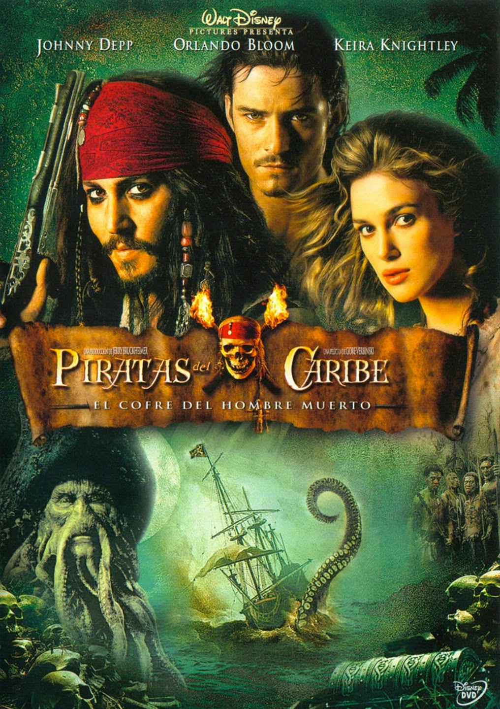 | 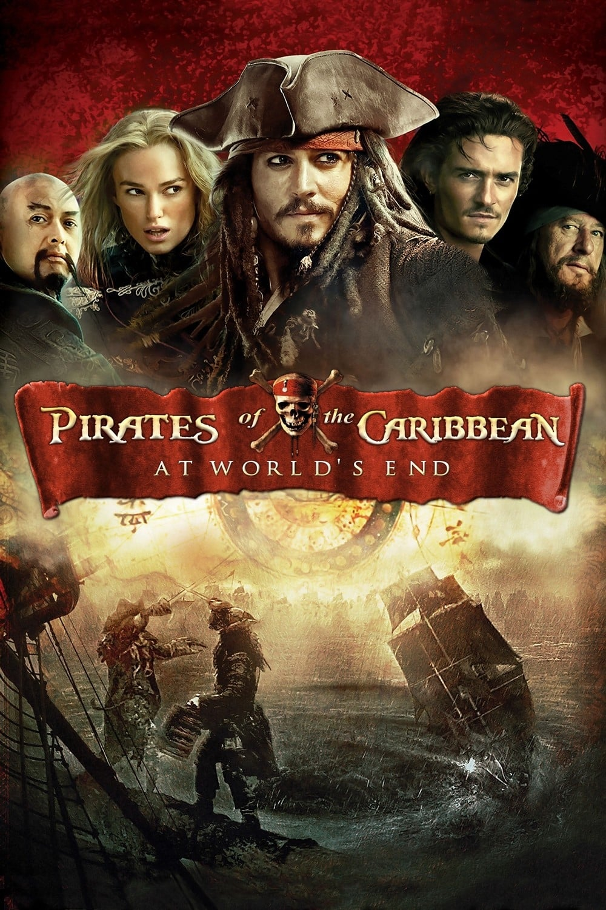 |
Series
Para terminar con estta seccion hablare un poco de las series que me gustan como mencione anteriormente me gustan las historias con un buen desarollo de personajes y una trama interesante algunas de mis series favoritas son:
| 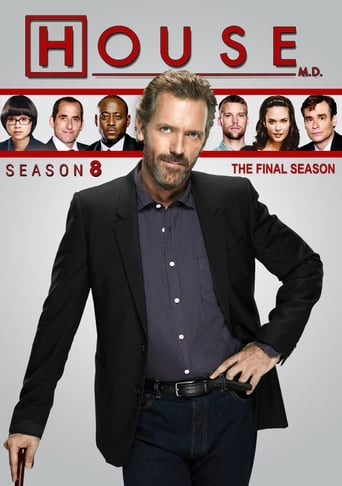 |  |
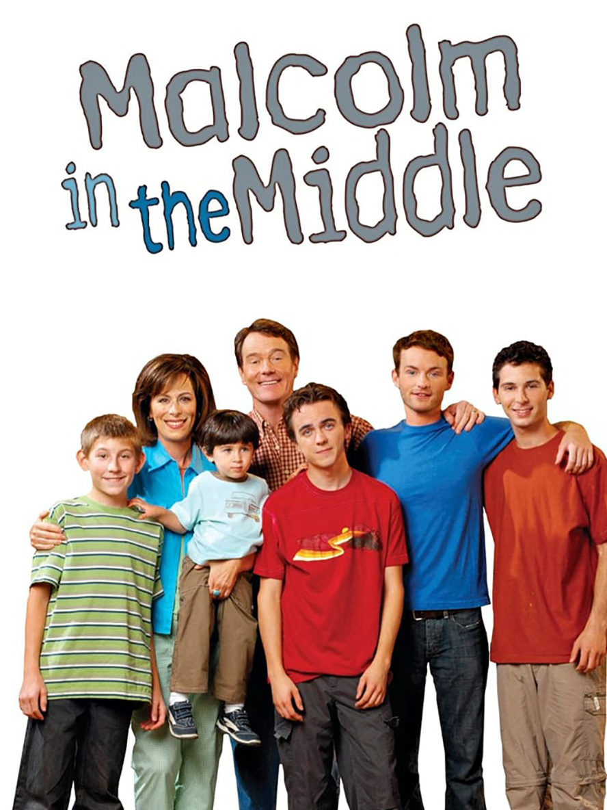 |
Doctor House: Es la historia de un doctor super dotado el cual resuelve casos medicos que nigun otro doctor puede resolver, es una serie que da un desarollo a su elenco principal con el pasar de los episodios ademas de ver como cada mimbro del equipo comienza a madurar y definir su propio camino cabe mencionar que aunnque suene una serie muy seria la personalidad excentrica del protagonista da unos muy buenos momentos de comedia
Breaking Bad:Esta serie me gusta debido a la trama que maneja y como se comienza a jugar un juego del gato y erl raton entre 2 personajes para evitar que el protagonista termine preso si bien esta serie es mucho mas seria me agrada las interacciones de los personajes y el carisma que tienen pero en especial la evolución que tiene el protagonista
Malcom el de en medio:Esta seerie es un clasico me encanta es comedia en su estado puro no hay capitulo donde no podia evitar reir con las ocurencias de los personajes en especial Hal que hacia que cada capitulo estubiera cargado de comedia
En esta seccion hablare un poco de las obras de literatura japonesa y sus adaptaciones animadas que me gustan demaciado y los motivos de mi gusto hacia esas obras mis faboritas siendo:
| 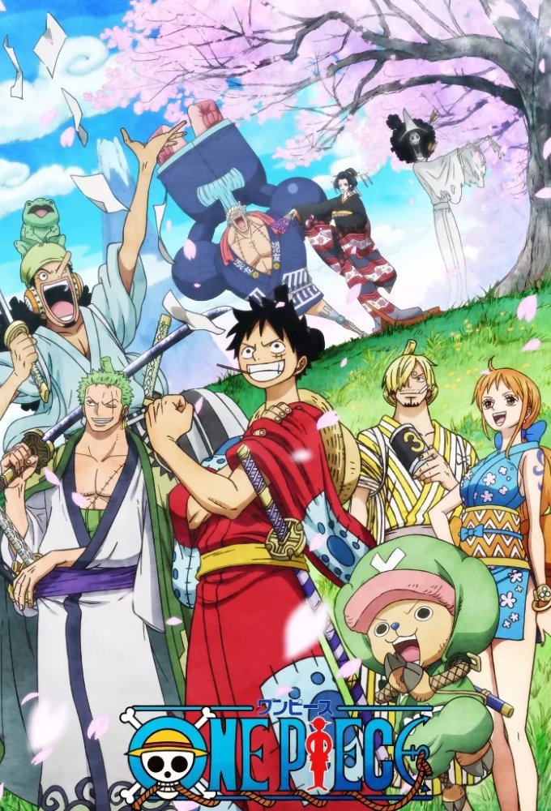 |  |
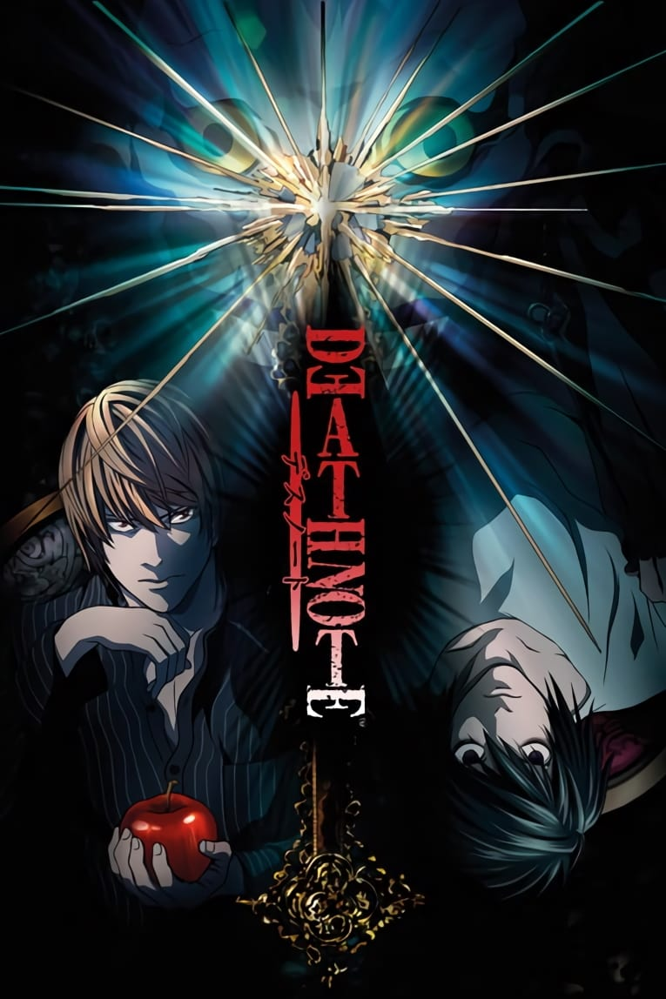 | 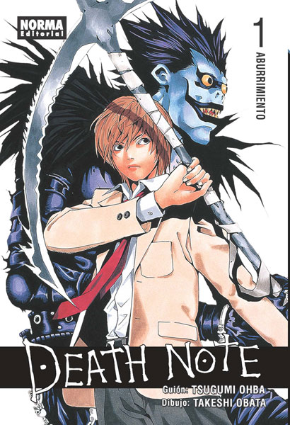 |
One piece: Es una historia de piratas los cuales buscan el tesoro del rey pirata que murio hace tiempo este anime me gusta por su tematica como mencione anteriormente soy un fanatico de los piratas y encontrar un anime que trate de estos fue una muy grata sorpresa ya que hace años que no hay historias de esta tematia ademas los personajes son muy carismaticos y la construccion del ambiente y el mundo es sorprendente puede traer hechos o personajes del pasado para complementar el arco actual o dar un gran desarollo a los personajes
Konosuba: En palabras simples es la historia de un joven que rencarna en un mundo de fantasia medieval acompañado de una diosa con el fin de vencer al rey demonio sin embargo este anime esta enfocado principalmente en la comedia por lo cual los personajes estan llenos de un carisma unico ademas que el protagonista hace referencia a diversos medios tales como pelicula o videojuegos por lo que las referncias y las situaciones comicas son el pan de cada dia en este anime
Death note:Esta es una historia de detectives la cual nos pone en la perspectiva de un joven el cual gracias a un cuaderno puede asesinar solo con escribir el nombre de la persona. La historia es muy entretenida y me encanta esa dinamica que habia entre el protagonista y el detective principal L el cual podia llegar a utilizar metodos cuestionables para descubrir la verdad dando asi un dilema entre cual de los 2 lleva la razón